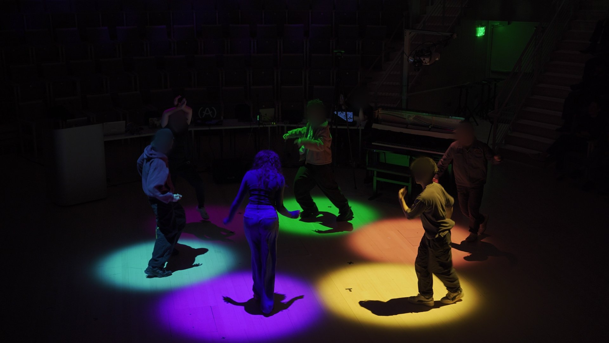

Anonymous submission · CHI 2027

Dancers in an Encypher cypher during a public live performance. Each dancer's zone is lit from above, with light intensity driven by that dancer's movement energy; the visualization screen has been replaced by light on the dancers themselves.
Music and dance are social practices of expression and connection, yet most HCI work in human-AI co-creation centers the solo performer. As generative music matures, we ask not only what AI can compose but what social encounters it can organize around sound. We present Encypher, a collaborative generative music system that translates collective movement qualities into text prompts conditioning real-time music generation for dance cyphers. Through five weeks of co-design with local dancers, a user study with unacquainted participants, a public museum event, and a live performance, we found that users developed shared agency, perceiving the music as a response to the room's energy. While newcomers felt uncertain, the system fostered social presence by prompting them to look to each other for cues. By treating sociality as a design concern rather than a downstream effect, we offer a framework and design implications for AI systems for collaborative, embodied expression.
Video documentation of the co-design sessions, user study, museum event, and live performance is being prepared (faces anonymized) and will be posted here.